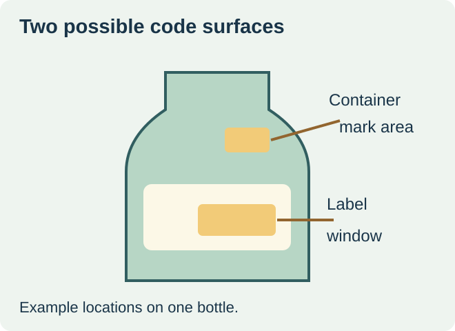
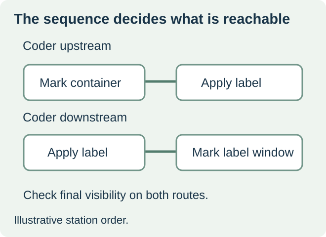

Keep the date on the container when the existing coding station already produces a readable, durable mark on a reachable part of the finished pack. Reserve a window on the label when the label is present and consistently positioned at the coding station, its surface supports the marking process, and the mark remains visible after packing. Compare representative finished packs before releasing either artwork or label material.


Place the coder in the actual sequence
Have the bottler draw the order of filling, closing, labeling, marking and packing for this SKU. If the coder is upstream of the label station, a white box on an artwork file will arrive too late for that head. If the label is already on the bottle, establish how the coded window will consistently face the coder. A surface can be printable and still fail as a production location when the line cannot present it.
Domino’s beverage sleeve guidance illustrates that equipment suppliers offer multiple marking technologies for particular packaging surfaces. Bring the actual surface and line conditions to the coder supplier for confirmation. A laser or inkjet technology name alone gives no result for a different sleeve, coating or pressure-sensitive stock. Domino guidance on beverage sleeves
| Observed line condition | Route to investigate | Proof to bring back |
|---|---|---|
| Coder runs before the label is applied | Direct container mark in an available position | Readable finished pack with the actual label in place |
| Coder sees an oriented label after application | Specified window on the actual label | Code samples across position variation and normal handling |
| Label or sleeve covers the existing container mark | Move the decoration or qualify another code location | A finished pack and a drawing that agree on visibility |
| Coding process cannot handle the chosen surface | Ask the equipment supplier to qualify an accessible alternative | Surface-specific marking trial using intended production material |


Buy the surface specified by the trial
For a label window, document its area and location on the finished pack, the material actually exposed there, and any change in ink, coating or laminate. A blank design area can still be covered by the label’s finish. Ask the converter and coding supplier to identify the layer receiving the mark and to review the proposed materials together.
For a direct mark, name the exact container area and its surface treatment. Keep the brand label, multipack carrier or other decoration clear of that area wherever readers need to see it. A code visible at the station can become hard to read after the sleeve or multipack is fitted. Include that final viewing stage in the approval.
Make the two samples comparable
For a hypothetical bottled tea order, the line marks a shoulder before applying a body label. One label design leaves the shoulder visible. A taller design hides part of the mark. Compare those completed packs first. If the design must cover the current position, request a new supported location before paying for artwork changes or ordering a preprinted coding window.
Use the actual production material and the marking vendor’s approved trial approach. Record position variation, legibility, rubbing, chilling or moisture where they matter, and the result after the outer pack is assembled. Take date and lot definitions from the data owner. Keep this order decision focused on where the mark can be applied and read.
Discuss the unresolved label requirement
For a code window on an ordered label, send the real printed or unprinted surface specification, a marked artwork drawing, the line’s marking method and station, and samples showing actual code position and handling conditions. Share label dimensions, quantities, and versions. Review beverage label options and prepare a label specification inquiry. The contact page opens an email draft and lists email or WhatsApp for attachments. Supply, proof options, testing, pricing and timing require project confirmation.